Firefly: IRSA Searches
+IRSA Catalogs -- Searching for catalogs from IRSA
+Searching for and Loading Images
+Making 3-color Images
+Adding New Images
When you click on the "Catalogs" tab
at the top of the Firefly window, you are dropped into an IRSA
Catalogs search, which is what we describe here.
IRSA Catalogs --
Searching for catalogs at IRSA
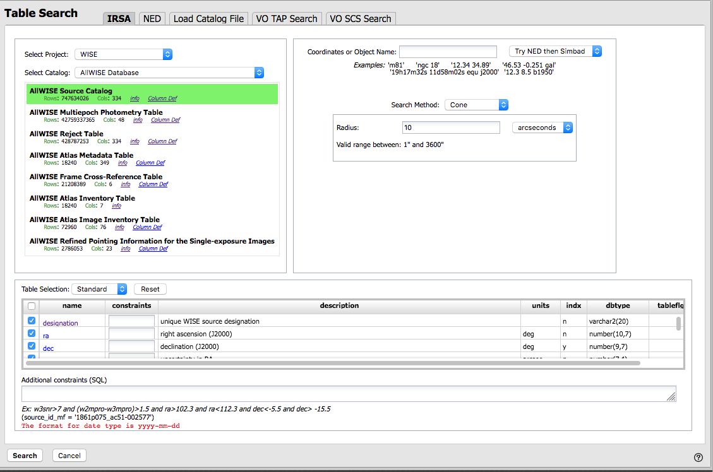
The upper left quadrant of this window is where you specify which
catalog you want to search. To change catalogs, first select the
"project" under which they are housed at IRSA, such as 2MASS, IRAS,
WISE, MSX, etc. The available choices underneath that change
according to the project you have selected. A short description is
provided for each of the catalogs, with links for more information
(including definitions of the sometimes cryptic column names); an
example is here:
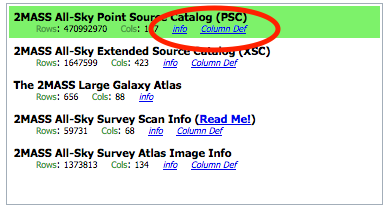
The upper right quadrant of this window is where you specify the
target (the position is sometimes pre-filled with its best guess as to
what you want) and the search method (cone, elliptical, box, polygon,
multi-object, all-sky), and the parameters that go with that search
method (e.g., the radius of the cone). The parameters for each of
these searches change dynamically as you select search options, as
follows:
- Caution:
- Pick your units from the drop-down
first, and then enter a number; if you enter a number and then select
from the drop-down, it will convert your number from the old units to
the new units. There are both upper and lower limits to your search
radius; it will tell you if you request something too big or too
small. Note that these limits are catalog-dependent.
- Cone search:
-
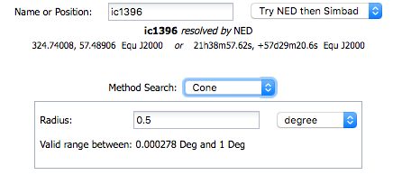
You can put in a position, but sometimes it attempts to guess a
position, based on prior searches. You specify the cone radius; the
default is 10 arcsec.
- Elliptical search:
-
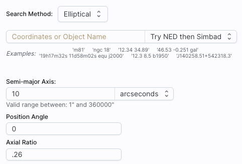
You can put in a position, but sometimes it attempts to guess a
position, based on prior searches. You specify the search ellipse's
semi-major axis, position ratio, and axial ratio. Defaults are as
shown.
- Box search:
-
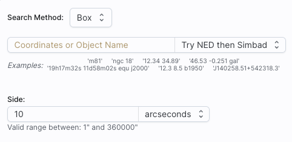
You can put in a position, but sometimes it attempts to guess a
position, based on prior searches. You specify the box's length on a
side; default is as shown.
⚠ Tips and
Troubleshooting: If you enter coordinates in non-equatorial
units (e.g., Galactic or ecliptic), the search is still carried out in
equatorial coordinates (RA and Dec).
- Polygon search:
-
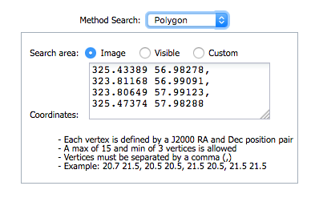
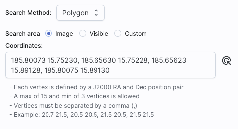
For this, note that it no longer has a single target location. It will
sometimes try to pre-fill the vertices of the position it thinks you want, based on
prior searches. If you have images loaded, it will give you choices
based on the current image -- you can select whether you want
the catalog request to match the entire area of the image you have
selected ("image"), or just the portion of the image you can see in
the current view ("visible"), or your own ("custom") area. (However,
note that if you have selected a HiPS image before searching, you are
limited to a maximum of 5 degrees.) The list of
vertices in the coordinates box are in decimal RA and Dec in degrees.
You must enter at least 3 and at most 15 vertices, separated by a
comma. Note that, for overlaying catalogs on HiPS images, you cannot
select "image", because HiPS images are generally very, very large, so
this would result in too many points being returned. There is a
maximum of 5 degrees imposed on catalog searches to match HiPS
images.
If you select a
rectangular region of your image and then select a polygon
catalog search, you will have a fourth radio button above, "selection",
which matches the corners of your selected image region.
If you select the "bullseye" icon on the right ( ), you get a pop-up with
a way to interactively select your target; this works just like this interactive target
refinement (go there for more details) :
), you get a pop-up with
a way to interactively select your target; this works just like this interactive target
refinement (go there for more details) :
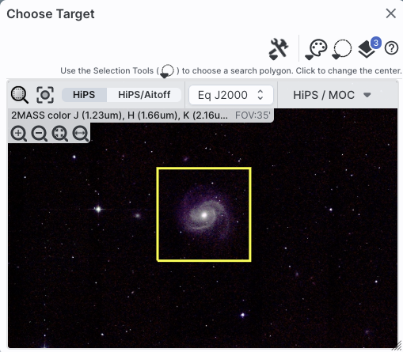
- Multi-Object search:
-
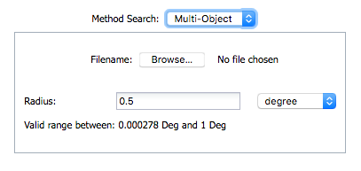
For a multi-object search, it can't guess what position you want.
You need to upload a file (from your disk or the IRSA Workspace  ) in IPAC table format , which is a varietal of plain text. (IRSA has a table validator which may be helpful.) Note that you also have to
specify the radius over which to search for each of the targets in
your list.
) in IPAC table format , which is a varietal of plain text. (IRSA has a table validator which may be helpful.) Note that you also have to
specify the radius over which to search for each of the targets in
your list.
When you do a multi-position search on catalogs, three new columns are
added to the catalog as it is returned to you. These columns are :
- cntr_01 - the target position you requested
- dist_x - the distance between the target position you requested
and the object it found
- pang_x - the position angle between the target position you requested
and the object it found
These additional columns can help you assess if the target(s) it found is
the target that should be matched to the position you requested.
- All-sky search:
-
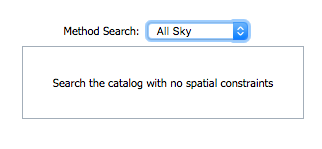
Because this is an all-sky search, it does not have a single target
entry box. In order to constrain this search, you need to impose
constraints on the bottom of the screen (see below).
The bottom of this window allows you to set restrictions on specific
columns. It gives you a list of all the available column names in the
corresponding catalog. (Most catalogs have identical "standard" and
"long form" selections, but some have more columns available in "long
form".) From here, you can choose what to display (tickboxes on the
left), and filter what is returned ("constraints" column). For
example, only return objects with values in column y that are greater
than x. If you add more than one restriction, they are combined
logically using an "AND" operators; be careful, because you can thus
restrict data such that none of the catalog meets your criteria.
Click on "Search" to initiate the search. It will load the catalog
into a tab of its own. The objects will also be overlaid on any images
you have loaded, and a default x-y plot will be shown. (For more on the
x-y plots, see Plots section.) All of these
representations are interlinked -- clicking on a row in the table
shows it on the image and in the plot, and clicking on an object in
the image shows it in the table and in the plot, and clicking on an
object in the plot shows it in the table and on the image.
To close the catalog search window without searching for a catalog,
click on "Cancel".
⚠ Tips and Troubleshooting
- If the catalog search is successful quickly, it will promptly return
the results in a tab of its own.
- The search may take a long time to return, especially
if you have asked for a large catalog, and you may think that nothing
has happened, but be patient and eventually it will
return a tab.
- Use large search radii with caution! Be sure you understand how many
sources you are likely to retrieve. Searches that retrieve more rows
will take longer. Searches that retrieve tens of thousands of rows
will take quite a while.
- If you want to impose additional constraints on the catalog during
your initial search, you can do so in the lower half of the screen
(e.g., SNR > n in some band, or an SQL command), you can place
constraints at this point. However, be advised that it is easy to
combine constraints such that no sources are retrieved!
- If you overlay a large catalog, large enough that the plot is a binned heatmap, the entire
source list is NOT overlaid, even if you zoom in a lot. The
way to work within these constraints is to impose a filter on the
catalog to get it below the threshold for a regular plot -- weed out
lower SNR sources, or filter based on RA/Dec, etc. Then all the
individual sources will be shown.
- If you overlay a large catalog, then turn around and save a regions file from
the catalog overlay, then unusual things can happen. If the plot
that results from the catalog is small enough to show individual
points in the plot, then all of the overlays will be saved to the
regions file. BUT if you have a plot with enough
points that it is a binned heatmap, the greatly abbreviated
("decimated") source list overlay will be saved, NOT
the entire catalog!
- If you have "pan by table row" turned on (see Visualization chapter),
then it may be disconcerting to have the images "jump" right after the
catalog loads. It is centering the selected catalog object (the first
one upon catalog loading) in the viewer. If you don't like this, turn
off "pan by table row".
- By default, it may show you fewer columns than are available in
the full catalog. By selecting "long form" (above the list of
columns), you can access the full range of available columns. In some
cases, there are literally hundreds of columns that you can access!
- If you start searching from a HiPS image, you are limited to a 5
degree search radius.
When you first start Firefly, depending on how you get into
it, an image may be pre-loaded. If the image is pre-loaded, you can
start manipulating the image right away; see the Visualization section.
If the first screen you come to is an empty results page, then you
need to decide what to load. To search for images, click on "images"
at the top to begin an image search:
If you do not have an image pre-loaded, the default start position is
in the position search for images. It is assuming by default that you
want to load a FITS image from IRSA services, though you can also load
a FITS image from disk or off another service on the web (see below).
(Flexible
image transport system, FITS , files are widely used in astronomy and are an easy
way to store images.)
The search window looks like this:
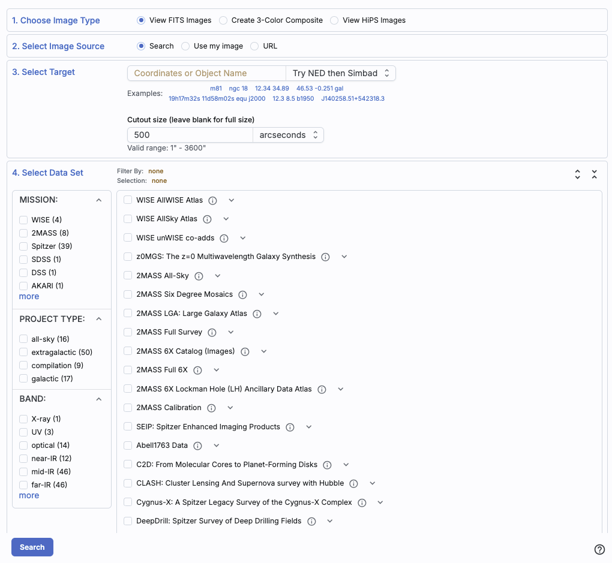
- 1. Choose Image Type
- First, you select which images you want to load: FITS
images (individually), FITS images that you load into a new
three-color image (more on 3-color images
below), or HiPS images (more on HiPS below; also see IVOA docs
for more about what HiPS
images are). (To load ASDF files , go to the Upload tab.)
- 2. Select Image Source
- Second, you select whether you want to pull an image
from IRSA's archives ("Search"; see below), your own disk ("Use my
image"), elsewhere on the web ("URL"), or the IRSA Workspace ("Workspace"). Note that to use
the Workspace (reading from or writing to it), you'll need to log in.
In the cases other than "Search", nearly all of the additional options
below this line vanish because they are no longer relevant. To
select an image off of your local disk, select "Use
my image", and then tell it where to find the image on your local
disk. To load an image from the web, pick the "URL"
option and enter the URL from which you want an image loaded. To load
an image from the IRSA Workspace, pick the
"Workspace" option and find the file you want to load.
If you would like to load an image from IRSA's archives, select
"Search" and go on to these subsequent additional search
parameters.
- 3. Select Target
- Third, you select a target. Examples are given below the text
entry box before you start typing in the box.
You may enter a target name, and have either NED-then-Simbad or
Simbad-then-NED resolve the target name into coordinates. After it
resolves the name, it will tell you which resolver service it used,
and also what that service has for the object type:

Alternatively, you may enter
coordinates directly. These coordinates can be in decimal degrees or
in hh:mm:ss dd:mm:ss format, or Jhhmmss+ddmmss format. By default, it
assumes you are working in J2000 coordinates; you can also specify
galactic, ecliptic, or B1950 coordinates as follows:
- '46.53, -0.251 gal' means 46.53, -0.251 degrees in galactic
coordinates
- '12.7, +4.3 ecl' means 12.7, +4.3 degrees in ecliptic coordinates
- '19h17m 11d58m b1950' means 19h17m 11d58m in B1950 coordinates
- a source name like 'J140320.67+542028.6' is parsed as 14h03m20.67s
+54d20m28.6s.
- a source name like 'G102.0360+59.7715' is parsed as 102.0360
+59.7715 in galactic coordinates
Examples are given below the text entry box before you start typing in
the box.
As you are completing a valid coordinate entry, it echoes back to
you what it thinks you are entering. Look just below the box in which
you are typing the coordinates to see it dynamically change.
Below the box where you enter the target, you can then specify the
size of the images you want. You may enter the cutout size in
arcseconds, arcminutes, or degrees; just change the drop-down option
accordingly.
⚠ Tips and Troubleshooting
- Pick your units from the drop-down first, and then enter a
number; if you enter a number and then select from the drop-down, it
will convert your number from the old units to the new units.
- There are both upper and lower limits to
your search size; it will tell you if you request something too big
or too small. Note that these limits may be image-dependent; larger
images may be available from certain surveys and smaller images may be
available from other surveys.
- If you want the whole image tile, just leave the
image size blank, then the most centered image tile in its entirety
will be returned. ("Most centered" means the one that best centers the
position you entered.)
- 4. Select Data Set
- Fourth, you select the data set. There are myriad
choices, which you can filter in various ways to allow you to find
what you need. Statistically, any one spot on the sky will only be
found in a few of these data sets, so it makes sense to weed down the
list, at least a little bit.
On the left hand side, you can filter by :
- Mission (or survey)
- Spitzer, WISE, Herschel, 2MASS, IRAS, ZTF, PTF, AKARI, DSS, SDSS, MSX,
COSMOS, MUSYC, BLAST, IRTS, BOLOCAM.
- Project Type
- Compilation (meaning, e.g., all the data available from a mission
that was not an all-sky survey), extragalactic, galactic, all-sky.
- Band
- X-ray, UV, optical, near-IR, mid-IR, far-IR, mm, radio. (Yes, you
can find data from non-IR missions/surveys here, depending on what
projects have delivered back to IRSA.)
The number in parentheses after each type is the number of data sets
in that category.
To expand or contract the options below each of these broad
categories, click on the black arrow on the right. To see all of the
choices in each of these broad categories, click on the black arrow
and then click "more" near the bottom of the list (after which you can
click "less" to collapse it again). In this example, "Mission" is
collapsed, "Project Type" is expanded, and "Band" is fully extended to
reveal more options than are shown by default:
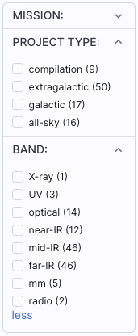
To select any of the options, click on the checkbox on the left. In
response to your selections, two things happen. (1) checked items
appear in highlights above this part of the page, next to "Filter By";
(2) the list of programs for selection on the right hand side changes.
Here is an example where the list has been filtered down to just
include WISE data:
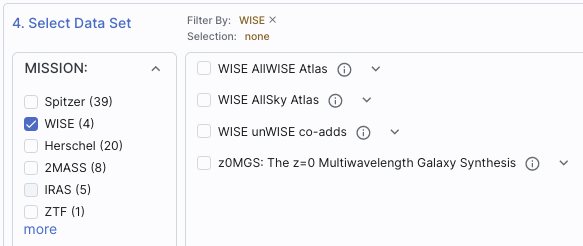
On the right hand side, you can select individual surveys and
individual bands therein. To expand or contract the options below each
of the categories, click on the black arrow on the right, next to the
data set name. To select any of the waveband options, click on the
checkbox on the left of the individual survey or individual bands.
Here is an example showing all of the WISE/AllWISE data selected (via
the tickbox next to "WISE AllWISE"), and just W2 from WISE/AllSky
selected (via the tickbox next to "W2" in the expanded section under
"WISE AllSky"). Note the "Selection" indication at the top.
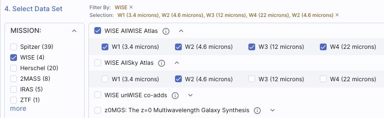
To find out more information about any given data set, click on the i
in the circle . This takes you to a master
list of all data sets available, from which you can obtain standard
information about the data sets (mission, wavelengths, links to more
information about the program or delivery, and more).
- Search!
- To actually initiate the search as specified, choose the "Search"
button in the lower left.
⚠ Tips and Troubleshooting
- You don't have to select something on the left side before
selecting something on the right side. If you know exactly what you
want, just jump in and select things on the right and click "search."
- If you select something on the left side, it will limit your
choices accordingly on the right side.
-
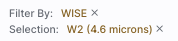
If you clear filters on the
left side, it doesn't affect selections you've already made on the
right. You must actually clear all the selections on the right to
reset everything. The most efficient way to do this is by clicking the
'x' next to the selection summary at the top of this portion of the
window -- the 'x' at the end of the "Filter By" line clears the
filters on the left, and the 'x' at the end of the "Selection" line
clears the selections.
- If you want to expand all the
choices on the right (to ease in band selection), click on the sets of
arrows in the upper right of this part of the screen to show all
options, or collapse them again.
- If you go back to add new images of the same target, be sure to
uncheck the images you had previously selected, otherwise you will
load in second copies of those images.
- To remove an image you have already loaded (or an error message
from a data set that had no data covering your target), click on the
small blue "x" in the upper right of the corresponding image tile.
- Most images that are returned will be cropped down to your
requested size (if you entered a size). Some, however, cannot easily
be cropped at the moment. Those are delivered full-size, and you can
crop them down separately if you want.
- For more information on the data sets included in Firefly, see this list .
- Firefly will NOT return ALL the images for your specified
combination of dataset+band+position; it returns the most centered
science image it can find out of the bands it can access. This is
usually but not always actually going to be the most useful to you,
depending on what you're trying to do. Some programs delivered PSFs,
mosaics created with alternate algorithms, etc. To find all the data
at IRSA for a given target, you have several options, but the most
efficient might be to enter the desired position in the big search box
on the IRSA
home page (this accesses a
tool called Data Discovery).
Much more detail about interacting with images can be found in the Visualization section.
You can create 3-color images directly from the image search. Select
"Create 3-Color Composite" from the top row of options. The rest of
the window changes to look like the following:
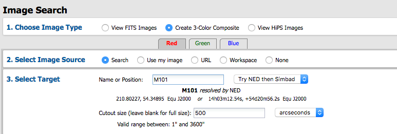
By
default, you can select the red plane first; you then populate that
color plane with all the same choices as you would have for a single
channel image (as above). To set the additional color planes, click on
"green" and then "blue" to populate those planes accordingly.
It assumes that you must want the same position for all three color
planes.
Select your options individually for each color plane (red, green,
blue), and click 'Search' in the lower left. To exit the search
window (i.e., cancel) without creating a new 3-color image, click on
any other tab at the top, e.g., "Results" returns you to the results
you have already loaded into the tool.
To change the color stretch of each color plane individually, click on
the "Color Stretch" icon in the toolbox on the top of the images pane;
see the Visualization section. Much
more detail about interacting with images can be found in the Visualization section.
⚠ Tips and Troubleshooting
- You load all three images at once, e.g., you do NOT pick red,
click search, then go back and pick green, click search, then go back
and pick blue, click search. Instead, click red and define what you
want for that image, then go to green and do the same, then go to blue
and do the same. Don't click "search" until you have specified all
three bands.
- The images will be downsampled to the resolution of the red
image. If you, say, load an MSX image into the red plane, a WISE image
into the green plane, and a 2MASS image into the blue plane, all of
the images will have MSX-sized pixels. If you load a WISE image into
the red and green planes, and a 2MASS image into the blue plane, the
images will have WISE-sized pixels.